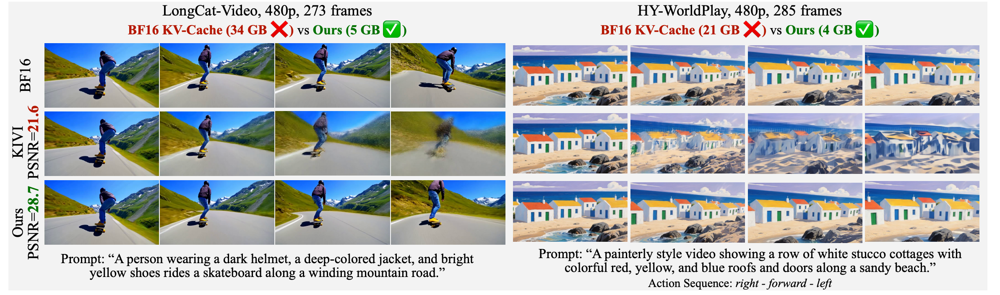
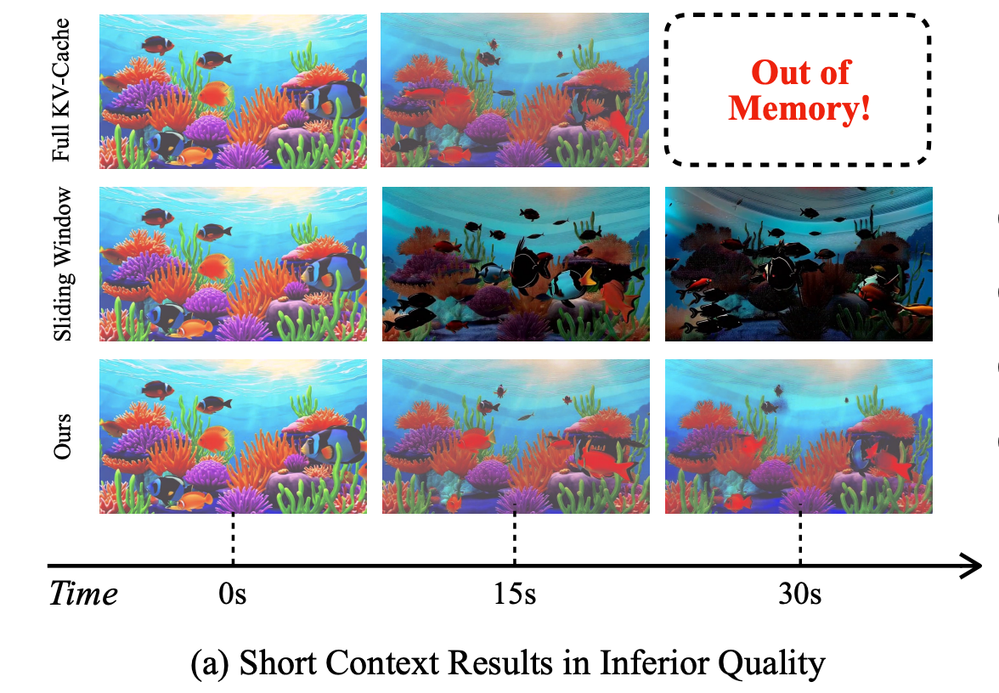
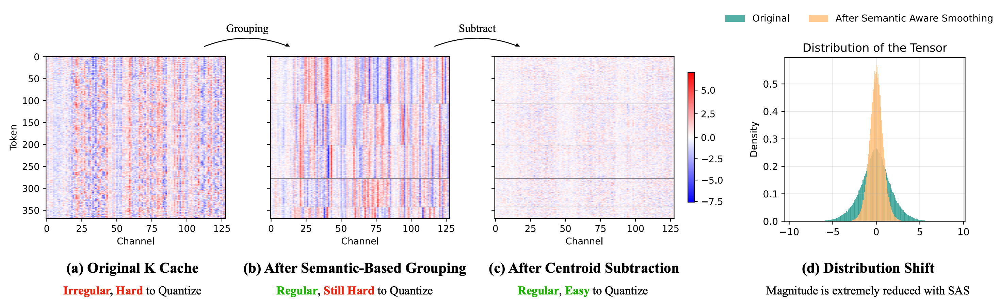
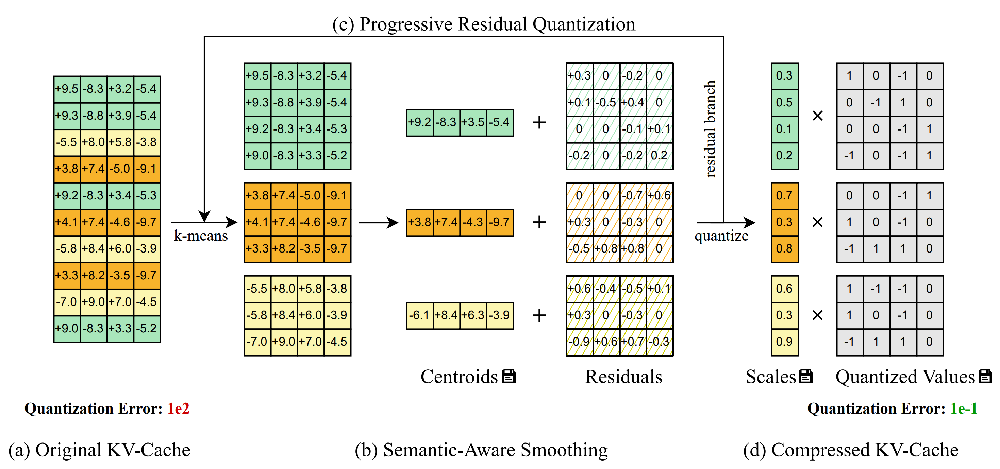
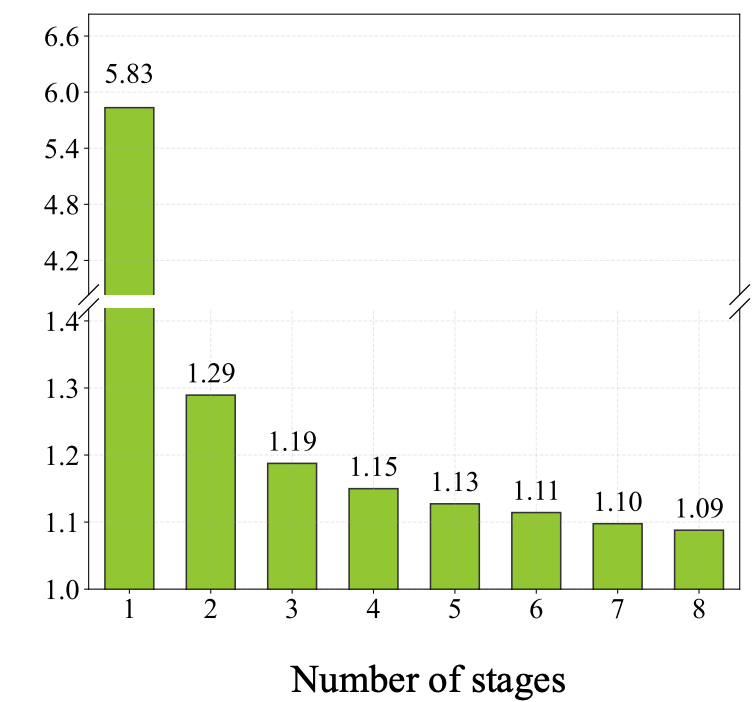
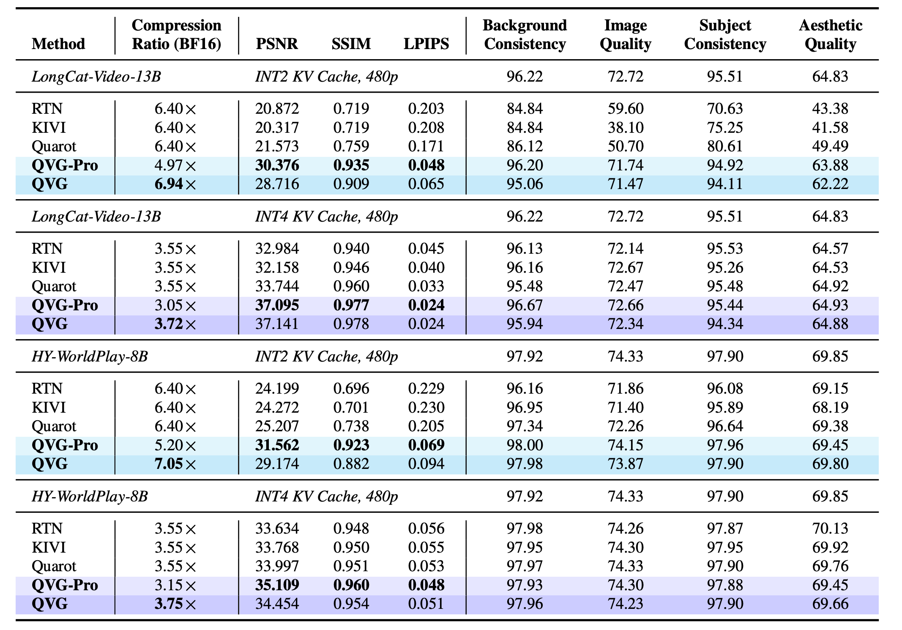
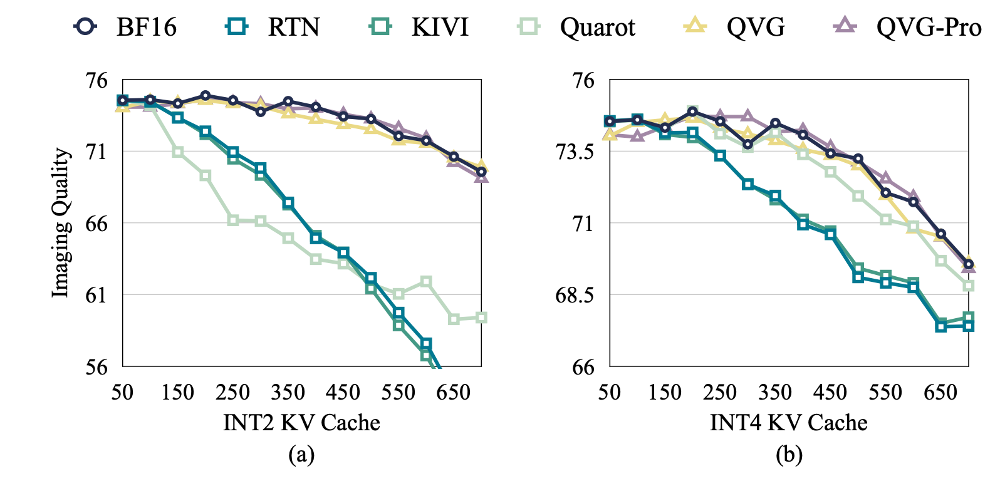

Quant VideoGen (QVG) is a training-free KV-cache quantization framework for auto-regressive video diffusion models. It exploits video's spatiotemporal redundancy through Semantic-Aware Smoothing and Progressive Residual Quantization to compress the KV-cache down to 2-bit with near-lossless quality. QVG reduces KV-cache memory by up to 7× with less than 4% latency overhead.
Auto-regressive video diffusion marks a paradigm shift in video generation: by enforcing temporal causality, models like LongCat-Video, HY-WorldPlay, and Self-Forcing can generate long, streaming videos incrementally. This enables applications ranging from live-streaming generation to interactive world models.
However, auto-regressive inference introduces a critical system and algorithm coupled bottleneck: KV-cache memory. Unlike bidirectional models, auto-regressive models must retain a growing KV-cache to condition on all previously generated frames. This cache grows linearly with history and quickly dominates GPU memory.
More critically, KV-cache is not just an efficiency bottleneck. It is also a capability bottleneck. When memory forces a truncated context window, the model's effective working memory shrinks, directly degrading long-horizon consistency in identity, layout, and motion. Retaining more history leads to substantially better generation quality.
QVG bridges this gap through the following approaches:
QVG reduces KV-cache memory by up to about 7× compared to BF16 while adding less than 4% end-to-end latency overhead. It also improves quantization error substantially relative to prior KV-cache quantization baselines at similar compression.

KV-cache quantization is well-studied for LLMs, with methods like KIVI and QuaRot achieving strong results. However, naively applying these techniques to video diffusion leads to severe quality degradation. The root cause lies in fundamentally different activation statistics:
These properties make standard per-channel or per-token quantization schemes brittle for video models, motivating a video-specific approach that explicitly leverages the spatiotemporal structure of video data.

The key observation behind QVG is that video KV-cache exhibits strong spatiotemporal redundancy: tokens that are spatially or temporally adjacent tend to be numerically similar in latent space. A fixed spatial patch across consecutive frames changes slowly (temporal redundancy), and nearby patches within the same frame share similar features (spatial redundancy).
Semantic-Aware Smoothing exploits this redundancy through two steps:
Step 1: Semantic-based grouping. We apply the k-means algorithm on the KV-cache along the sequence dimension to partition tokens into semantically similar groups. Tokens within the same group exhibit significantly more homogeneous value distributions, since they share similar spatial and temporal characteristics.
Step 2: Centroid subtraction. For each group, we subtract its centroid (mean value) to obtain a residual tensor. Since the large-magnitude values are shared across semantically similar tokens and captured by the centroid, the resulting residuals have a much smaller magnitude and more concentrated distribution around zero — an ideal target for low-bit quantization.
This simple yet effective technique reduces quantization error by ~6.9× for keys and ~2.6× for values across all precision choices, without any training or fine-tuning.

Inspired by streaming video codecs that progressively encode multi-scale representations, QVG introduces Progressive Residual Quantization — a coarse-to-fine scheme that iteratively refines quantization in multiple stages.
Starting from the initial residual (output of Semantic-Aware Smoothing), each subsequent stage applies Semantic-Aware Smoothing again on the remaining residual to capture finer-grained details. After T stages, the final residual is quantized to low-bit integers, while the centroids and assignment vectors from all stages are stored as compact metadata.
The first stage provides the dominant error reduction (5.83× MSE reduction vs. naive quantization). Subsequent stages continue to improve quality with diminishing returns, enabling a smooth trade-off between quality and compression by simply adjusting the number of stages.
For reconstruction, the process is reversed: starting from the quantized output, centroids are progressively added back from the last stage to the first, faithfully recovering the original tensor.


QVG incorporates several system-level optimizations to minimize latency overhead:
These optimizations ensure that QVG introduces only 1.5%–4.3% end-to-end latency overhead across different models, making it practical for real-time deployment.
QVG is evaluated on three auto-regressive video generation models — LongCat-Video-13B, HY-WorldPlay-8B, and Self-Forcing-Wan-1.3B — and consistently outperforms all baselines (RTN, KIVI, QuaRot) in both quality and compression:


@article{xi2026quant,
title={Quant VideoGen: Auto-Regressive Long Video Generation via 2-Bit KV-Cache Quantization},
author={Xi, Haocheng and Yang, Shuo and Zhao, Yilong and Li, Muyang and Cai, Han and Li, Xingyang and Lin, Yujun and Zhang, Zhuoyang and Zhang, Jintao and Li, Xiuyu and others},
journal={arXiv preprint arXiv:2602.02958},
year={2026}
}